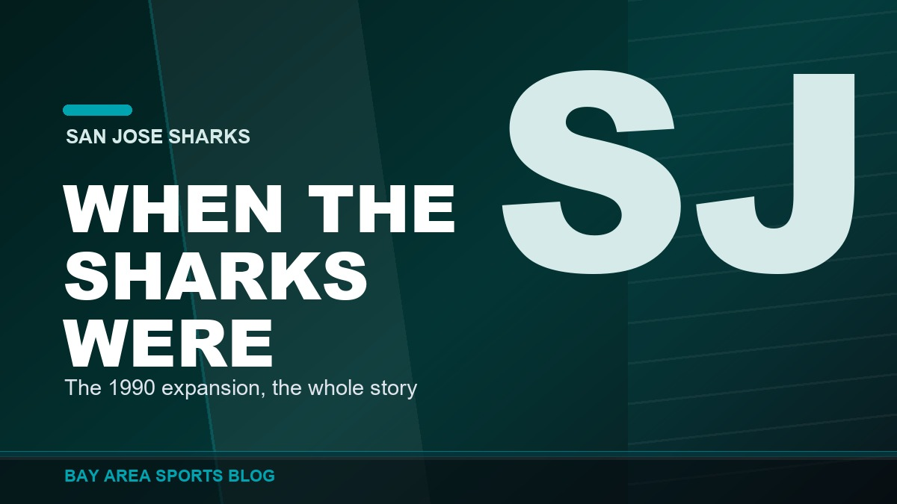
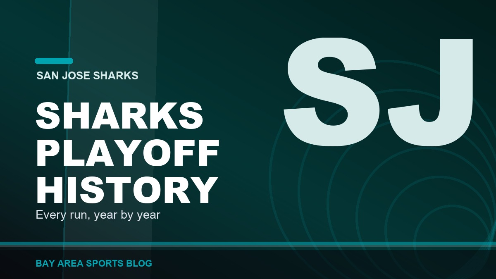
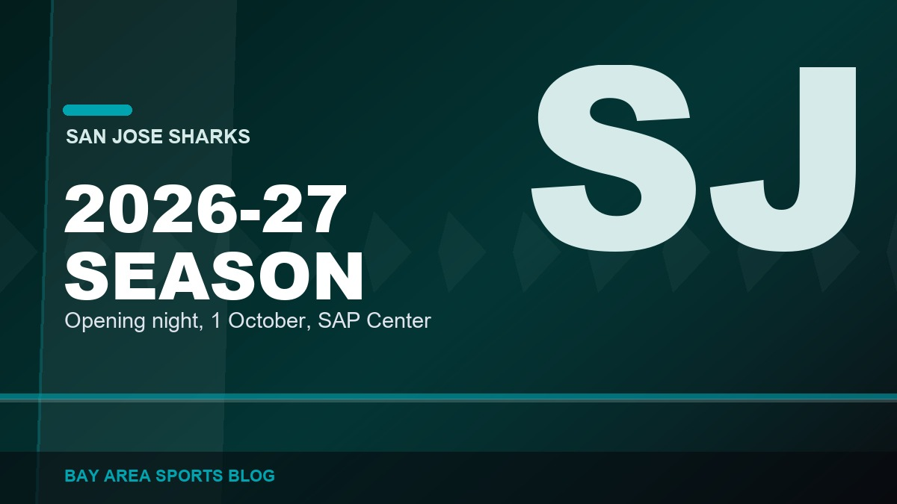
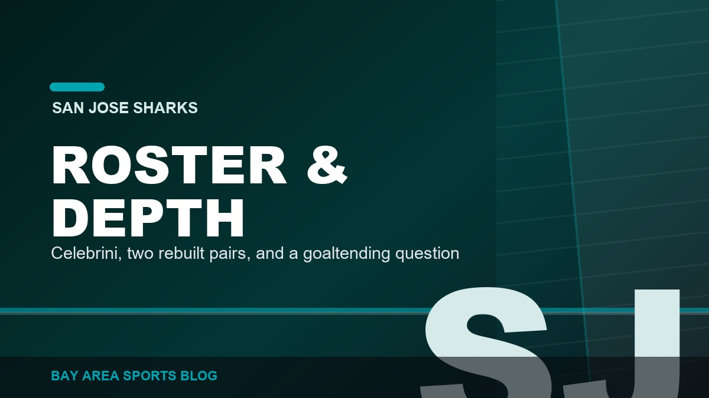

Bay Area NHL
San Jose Sharks coverage from Bay Area Sports Blog: the rebuild, the young core, and the road back to relevance.
NHLSharks

When Were the San Jose Sharks Founded? The Full Origin Story
The San Jose Sharks were founded on 9 May 1990 and began play in 1991-92. The Gund brothers, the North Stars swap, the Cow Palace years and how they got the name.

San Jose Sharks Playoff History: Every Run, Year by Year
The complete San Jose Sharks playoff history: all 21 postseason trips, the 1994 upset, the 2016 Stanley Cup Final, the 2019 comeback and the drought since.

The Sharks 2026-27 Schedule and Season Hub
The San Jose Sharks 2026-27 season hub: schedule, opening night, the storylines that decide the year, and links to our coverage as it publishes.

The Sharks Roster and Depth Chart for 2026-27
The San Jose Sharks 2026-27 roster and depth chart: projected forward lines, defence pairs, goaltending, and every move made in the 2026 offseason.

Macklin Celebrini: The Records, the Contract, Where He Ranks
Macklin Celebrini by the numbers: the 115-point franchise record season, his NHL-high $18.8 million contract, and how his start compares.

Thirty-Five Years, One Final, No Cup: The Sharks History
The San Jose Sharks franchise history: the 1991 expansion, the 2016 Stanley Cup Final, the 2019 Game 7 comeback, and why they have never won a Cup.

Every Bay Area Championship, Team by Team
Twenty-one titles, six franchises, five leagues, with the years, the decades, and the ones that do not count.

The Sharks Rebuild Finally Has a Pulse, and His Name Is Macklin Celebrini
Seven straight springs without playoff hockey in San Jose. So why is the Tank suddenly worth watching again?